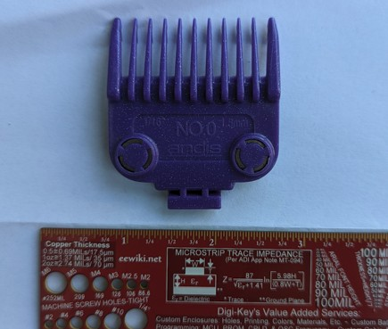
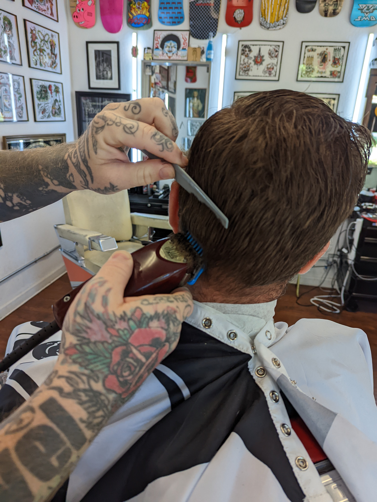
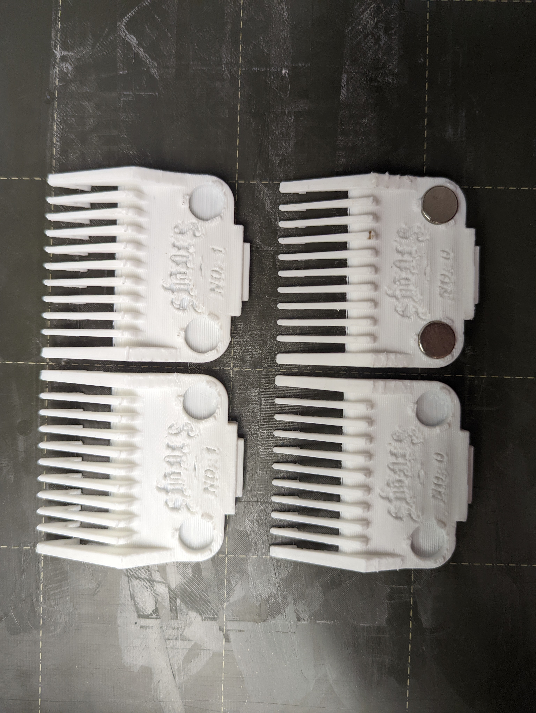
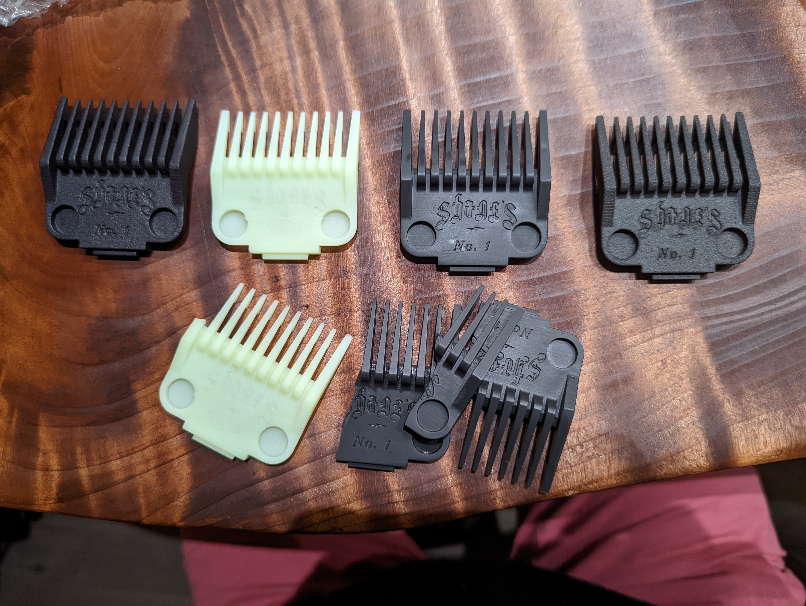
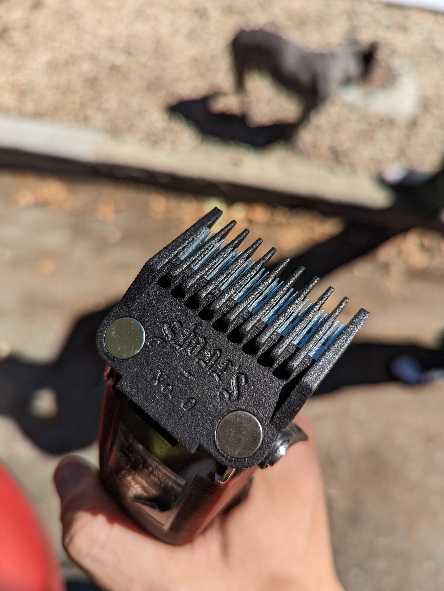
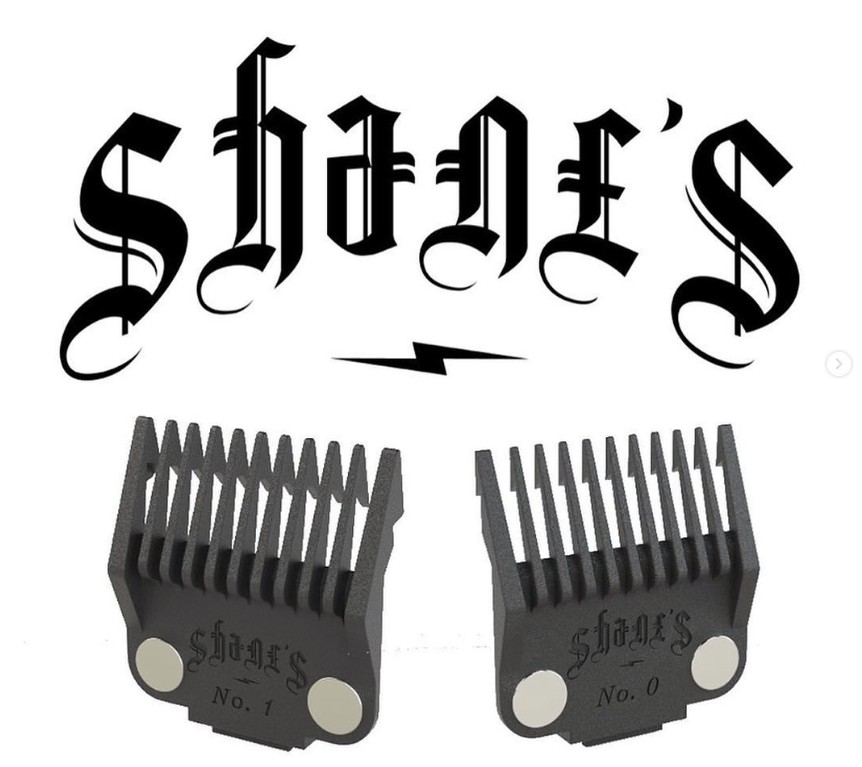
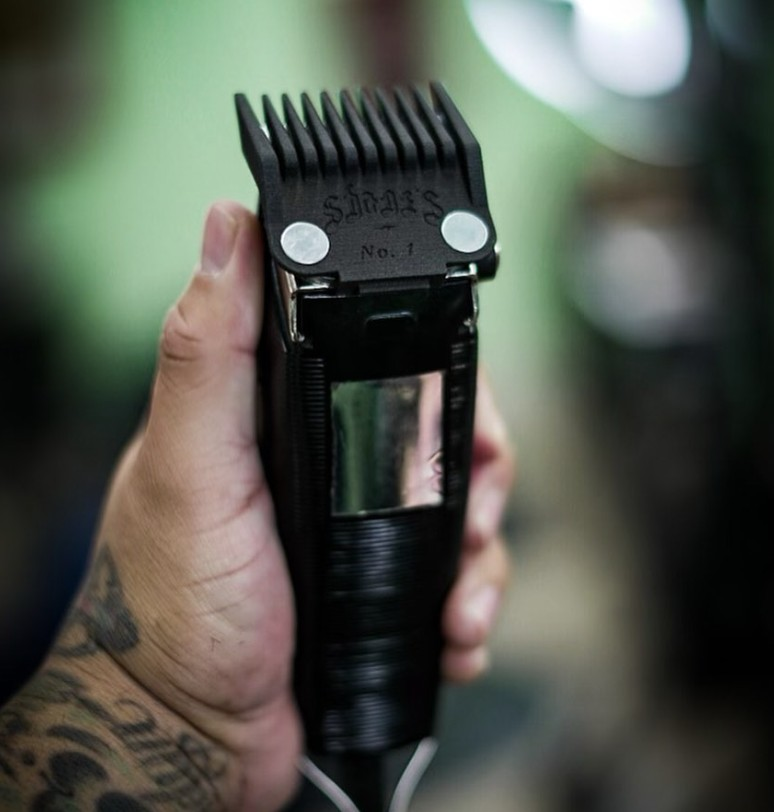

A commercially deployed product — designed in collaboration with a working barber, optimized for additive manufacturing, and shipped in approximately 500 units to professional barbers.
01 — Problem
Shane had a specific problem: the clipper guards on the market didn't grip reliably, didn't hold their size setting under pressure, or wore out too quickly for a professional using them all day.
The challenge was translating entirely qualitative feedback — "it slips", "it feels cheap", "it doesn't stay put" — into concrete engineering requirements.
"He knew exactly what was wrong. He couldn't tell me the dimensions or tolerances he needed. That translation was the job."


02 — Process
Observed how guards are used, worn, and removed. Converted each complaint into a measurable requirement: "it slips" → minimum retention force spec; "feels cheap" → minimum wall thickness; "doesn't stay put" → snap fit preload requirement.
Designed the guard in SolidWorks with additive manufacturing constraints from the start: no unsupported overhangs above 45°, wall thicknesses above minimum printable feature size, snap features oriented along the print axis for maximum strength.
Brought prototype revisions directly to Shane for in-use feedback. Each iteration addressed specific issues — grip texture, snap retention, dimensional fit. Ran ~6 design iterations before reaching a design he was willing to sell.
Set up a production print workflow with consistent slicer settings, material specification, and a simple go/no-go dimensional check. Delivered batches with a defect rate low enough for commercial sale.



03 — Solution
The final design has a textured grip surface, a snap fit retention system with measured preload, and wall geometry that resists flexing under use. The design is modular — multiple guard sizes share the same snap interface.
The product carries Shane's Barbershop branding and is sold commercially — making this a real product, not just a portfolio piece.


04 — Result
Demonstrates the full product design loop: user research, requirements capture, iterative prototyping, DFM, and production. The same process of converting qualitative feedback into engineering specs is what I do at Brewbird every time a field service report comes in describing a machine that "doesn't feel right."
05 — Key Learning
The hardest part of this project wasn't mechanical design — it was translation. Converting "it slips" into a minimum retention force specification, and "feels cheap" into a minimum wall thickness, required observing how the product was actually used and asking questions until each requirement became measurable.
Iterating directly with the end user at each prototype revision is dramatically faster than trying to get complete requirements upfront. Each round of feedback surfaced things no specification discussion would have caught. The same approach — short iterations with real users, not long spec documents — applies to every product development cycle I've worked on since.